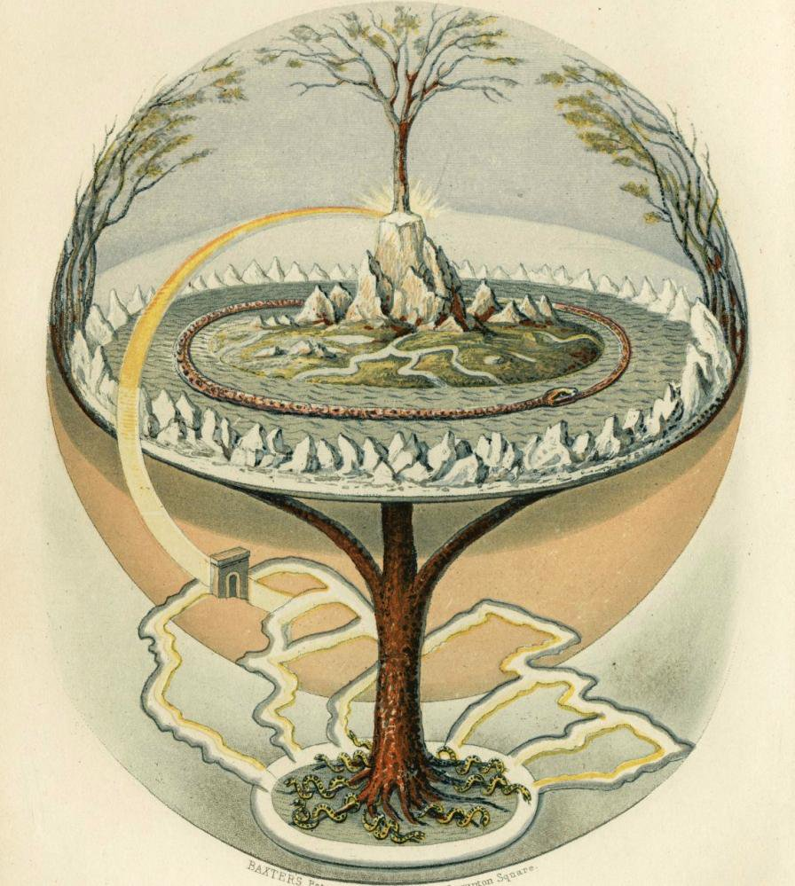
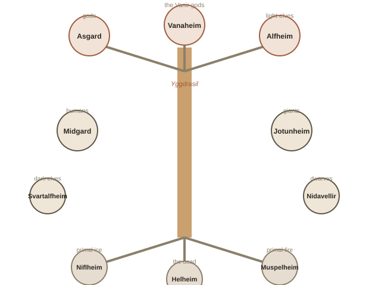

Chapter 1: A World Built Around a Tree
Most mythologies describe how the world began. Norse mythology is unusual because it also describes, in specific detail, how the world will end — and its own gods already know the date is coming and cannot stop it. Before getting to that ending, it helps to understand the shape of the universe the Norse imagined, because almost nothing in their myths makes sense without it.
A universe built around a tree
At the center of Norse cosmology (a culture's model of how the universe is structured) stands Yggdrasil, an immense ash tree whose branches and roots connect nine separate realms. This wasn't a poetic metaphor to the people who told these stories — it was treated as the literal structure holding reality together.

The nine realms aren't neatly separate countries on a map; they're arranged along the tree itself, roughly in three tiers. Up in the branches: Asgard, home of the main tribe of gods (the Æsir, which includes Odin and Thor); Vanaheim, home of a second, older tribe of gods (the Vanir, associated with fertility and nature); and Alfheim, home of the light elves. Around the trunk, at roughly human height: Midgard, the realm of humans (the name literally means "middle enclosure"); Jotunheim, home of the giants, who are constantly in tension with the gods; and the realms of the dwarves and dark elves, skilled craftsmen who forge magical objects for the gods. Down among the roots: Niflheim, a realm of primal ice and mist; Muspelheim, a realm of primal fire; and Helheim, the realm of the dead — ruled by a goddess named Hel, from whom the English word actually descends.

Odin: a god who pays for knowledge
The chief of the Norse gods, Odin, is not a simple, all-powerful ruler — he's obsessive about knowledge, and repeatedly pays a steep personal price to get it. He gave up one of his own eyes in exchange for a drink from a well of wisdom. In another story, wanting to learn the secret of the runes (the ancient Norse alphabet, believed to hold magical power), he pierced himself with his own spear and hung himself from Yggdrasil for nine days and nine nights, taking no food or water, until the knowledge finally came to him. A god deliberately hurting and half-killing himself just to learn something is a very different image from most other mythologies' chief gods, who tend to rule through raw power rather than sacrifice.
Loki: neither hero nor simple villain
Perhaps the most misunderstood figure to modern audiences is Loki, largely because pop culture has flattened him into a straightforward villain. In the original myths he's a trickster (a mischief-making figure who breaks rules and causes chaos, but isn't purely evil — a common role across many mythologies) — technically a giant by blood, but living among the gods, and often responsible for both causing the gods' problems and cleverly solving them. He's genuinely useful to the gods for most of the myths. It's only later, after a series of escalating betrayals, that he turns fully hostile — setting up his role in the story's ending.
Ragnarok: an ending the gods can see coming
Ragnarok is the prophesied final battle, where most of the major gods are destined to die, the nine realms are engulfed in fire and flood, and the world is submerged. What makes this genuinely unusual among mythologies is that Ragnarok isn't a possible bad outcome the gods might avoid through virtue or victory — it's a fixed, known future. Odin himself has heard the prophecy. He spends much of Norse mythology preparing for a battle he already knows the gods will lose, gathering slain warriors into Valhalla specifically to fight and die again at Ragnarok.
That detail is worth sitting with: the central mythology of Viking-age Scandinavia wasn't built around triumph, but around facing a certain, foreseen defeat with courage anyway. Even the myth doesn't fully end in despair — some sources describe a handful of gods surviving and a new world rising from the sea afterward — but the emotional core of the whole system is that dignity comes from how you face an ending you cannot change, not from winning.
Try this
Ideas for noticing or testing this in your own life.
- Notice the emotional core, stripped of the gods: next time you're facing something genuinely difficult you can't change, notice whether you respond more like Odin at Ragnarok — preparing and facing it with dignity anyway, rather than needing to "win" first.
- Try counting the hidden mythology in your week: Tuesday, Wednesday, Thursday, and Friday are all Norse/Germanic gods in disguise — notice how many times you say one without thinking about it.
Worth pulling on?
A few loose threads from this chapter — if any of these genuinely grab you, that's a good sign of where to go next.
- Four days of your week are secretly Norse gods. Tuesday (Tyr), Wednesday (Woden — Odin's Old English name), Thursday (Thor), and Friday (Frigg) all come directly from Norse/Germanic mythology, hiding in plain sight in a language you use every day.
- The word "berserk" comes from "berserker," Norse warriors said to fight in an uncontrollable, trance-like fury. Historians still debate whether this came from ritual practice, group psychology, or possibly a hallucinogenic mushroom — nobody knows for certain. → Chapter 2 could go deeper on the warrior culture and rituals behind these myths.
- Almost everything we know was written down once, by one Christian man, Snorri Sturluson, in 13th-century Iceland — centuries after these were living, spoken beliefs, and after Christianity had already replaced them. Every version of Norse mythology you've ever read is filtered through his choices about what to record and how. → A separate topic under Mythology: Greek Mythology, or Egyptian afterlife beliefs — both preserved very differently, worth comparing.